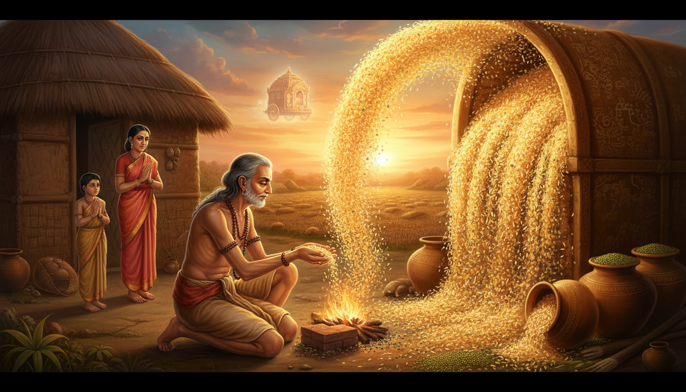

ज्योतिष से जिस दरिद्रता के बारे में पूछा जाता है, वह "कुछ न होना" नहीं है। वह छत की दरिद्रता है। आदमी अच्छा कमाता है और पैसा हर महीने उसी आँकड़े पर समाप्त हो जाता है। स्त्री एक कर्ज़ उतारती है और उसी माप का नया कर्ज़ खड़ा हो जाता है। परिवार की बचत एक जानी-पहचानी रकम तक पहुँचती है, वर्ष भर वहीं खड़ी रहती है, और फिर लगभग सरकारी समयबद्धता के साथ आने वाली किसी आपात स्थिति में बह जाती है।

शास्त्रीय ज्योतिष के पास इस पैटर्न का नाम है, और इसका ठीक विपरीत प्रतिबिंब एक ऋषि हैं: मुद्गल — कुरुक्षेत्र के उञ्छवृत्ति, जिनका एक मुट्ठी चावल देने के क्षण ही सौ गुना हो जाता था, और जिन्हें स्वर्ग की वाहन-सहित, शरीर छोड़े बिना, सीधी पेशकश की गई थी — और उन्होंने ठुकरा दी।
यह है उस घटना का विवरण, स्रोत क्या कहते हैं, और उस साधना का कार्य-स्वरूप जो आज भी गृहस्थ कर सकता है।
—
भाग एक: स्रोत वास्तव में क्या कहते हैं
1. वह पुरुष जो केवल वही खाता था जो खेत ने गिरा दिया था
मुद्गल का स्थान कुरुक्षेत्र है। वे भर्म्याश्व के पुत्र और पांचाल-वंशी हैं; मौद्गल्य ब्राह्मण अपना वंश इन्हीं से जोड़ते हैं। भागवत पुराण नवम स्कंध में इनकी वंशावली देता है और दशम स्कंध में वह विशेषण देता है जिससे सारी साधना का नाम पड़ा — उञ्छवृत्ति मुद्गल।
उञ्छ का अर्थ है बीनना। भीख नहीं, कृषि नहीं, दक्षिणा स्वीकार करना नहीं। उञ्छ यह है कि कटाई के बाद खेत में जाकर वे अकेले दाने उठाए जाएँ जो लावक गिरा गए या छोड़ गए। धर्मशास्त्रों की जीविका-श्रेणी में यह सबसे विनम्र है, और इसे वे लोग भी स्वेच्छा से चुनते हैं जिनके पास अधिक हो सकता था — क्योंकि आजीविका का यही एक ऐसा रूप है जिसमें किसी से कुछ लिया नहीं जाता।
महाभारत (वन पर्व) कहता है कि वे पत्नी नलयनी — जिन्हें इन्द्रसेना भी कहा जाता है — और पुत्र के साथ इसी प्रकार प्राप्त चावल के दानों पर रहते थे, और वे इष्टिकृत नामक कर्म करते थे — इष्टका, अर्थात् पकी हुई ईंट का कर्म। यह एक छोटी, ईंट से बनी वैदिक अग्नि है, हाथ से मिट्टी से बनाया गया सबसे साधारण वेदी-रूप।
इस कर्म की मात्रा समझ लेना पहली बात है। मुद्गल ने सौ ऋत्विजों वाला सत्र नहीं बनाया। उन्होंने एक ईंट की अग्नि बनाई और उसमें वही डाला जो उनके पास था।
2. सौ गुना वृद्धि
यह वह वाक्य है जो मुद्गल को हर उस व्यक्ति का संरक्षक बना देता है जिसकी समस्या नक़दी-प्रवाह है:
जब भी वे अपने विद्वान अतिथियों को चावल के दाने अर्पित करते, वे सौ गुना बढ़ जाते, और आए हुए सभी ब्राह्मण तृप्त हो जाते।
"वे धनी हो गए" नहीं। वृद्धि अर्पण के बिंदु पर होती है, स्वामित्व के बिंदु पर नहीं। यही अंतर पूरी तकनीक है, और इस लेख का प्रत्येक अनुष्ठान इसी का रूपांतर है। कोष बहिर्गामी ओर से खुलता है।
महाभारत यह भी कहता है कि इन्द्र और देवता स्वयं, शरीर धारण कर, उनके आश्रम में पूर्णिमा और अमावस्या के यज्ञों में सम्मिलित होने आते थे। महीने में दो दिन, ब्रह्मांड का सर्वोच्च दरबार एक उञ्छवृत्ति के चावल पर भोजन करता था।
3. दुर्वासा की परीक्षा — वह अतिथि जो सब खा गया और बचा हुआ अपने शरीर पर मल लिया
दुर्वासा का प्रसंग अनिवार्य है, क्योंकि सौ-गुना होने की प्रमाणन-क्रिया यही है।
दुर्वासा — ऋषियों में सबसे उग्र, जिनका शाप अकस्मात हानि का पर्याय है — आश्रम आए। मुद्गल ने उन्हें अतिथि के रूप में ग्रहण किया, जिसका वैदिक अर्थ है शरीर धारण कर आए ईश्वर। दुर्वासा ने पूरा भोजन खा लिया। सब कुछ। फिर जो बचा था उसे अपने शरीर पर मल लिया, और — संस्करण के अनुसार — या तो पात्र तोड़ दिए या बिना एक शब्द धन्यवाद दिए चले गए।
साधारण गृहस्थ के भीतर उस समय जो विशिष्ट, गरम, अनकहा आक्रोश उठता है — "मेरे साथ परोसने वाले जैसा व्यवहार हुआ" — वह मुद्गल के भीतर नहीं उठा। उन्होंने अर्पण किया; अर्पण स्वीकार हो गया, चाहे अपमानपूर्वक। पाठ का कथन यह है कि देने के क्षण ही कर्म पूर्ण हो गया, और ग्रहीता का कोई भी व्यवहार उसे अपूर्ण नहीं कर सकता।
इसके बाद ही आकाश हिला। यह क्रम संयोग नहीं है। वृद्धि उस दान का फल है जिसमें स्वामित्व नहीं रखा गया, और "स्वामित्व नहीं रखा" की कसौटी वह अतिथि है जो आपको कुछ भी वापस नहीं देता।
4. रथ, और उसका प्रत्याख्यान
अब आता है सबसे विचित्र और ज्योतिषी के लिए सबसे उपयोगी अंश।
एक दिव्य सारथी विमान लेकर प्रकट हुआ और घोषणा की कि मुद्गल को निर्वाण प्राप्त हो गया — अब वे स्वर्ग जाएँगे, वर्तमान शरीर के साथ, मृत्यु के बिना।
मुद्गल ने वह किया जो पुराणों में लगभग कोई नहीं करता। उन्होंने प्रश्न पूछे। उन्होंने स्वर्ग में निवास के लाभ-हानि पूछे, और सुनकर पृथ्वी पर ही रहना चुना।
शास्त्रीय रूप में जो उन्होंने सुना, वह यह है: स्वर्ग एक उधार-शेष है। पृथ्वी पर अर्जित पुण्य स्वर्ग में भोग से व्यय हो जाता है। वहाँ अर्जन नहीं होता। पुण्य समाप्त होते ही जीव गिरता है — च्यवन, पतन — और शेष कर्म जिस भी योनि में ले जाए, वहीं जन्म लेता है। स्वर्ग गंतव्य नहीं, बिना जमा वाला व्यय-खाता है।
वैष्णव संस्करणों में सारथी फिर उन्हें परम पद के विषय में बताता है — वह परम प्रकाश-धाम जिसमें यह क्षय नहीं होता — और मुद्गल उसी की ओर मुड़ते हैं। भागवत कथा को अपने सर्वाधिक उद्धृत वाक्यों में से एक से समेटता है (10.72.21): हरिश्चन्द्र, रन्तिदेव, उञ्छवृत्ति मुद्गल, शिबि, बलि — इन्होंने अनित्य के माध्यम से नित्य को प्राप्त किया।
इसे धन-सिद्धांत की तरह पढ़िए, क्योंकि परंपरा इसे वैसे ही पढ़ती है। अनित्य साधन (अन्न, नक़दी, वेतन) ठीक से प्रयुक्त हों तो नित्य फल देते हैं; अनित्य साधन रोक कर भोगे जाएँ तो स्थायी नहीं रहते — वे क्षय होते हैं। रथ ठुकराने वाला वही पुरुष है जिसने समझा कि जिस मुद्रा में आगे अर्जन संभव नहीं, उसमें एकमुश्त राशि एक जाल है।
5. उनके नाम का सूक्त — ऋग्वेद 10.102
मुद्गल ऋग्वेद 10.102 के द्रष्टा-ऋषि माने जाते हैं, और यह सूक्त उनके उपदेश का दूसरा आधा भाग है। यह एक रथ-दौड़ है — प्रसिद्ध "काष्ठ-रथ की दौड़," धीमे बैल, कीचड़, पहिया और दाँव।
परंपरा इसे एक रूपक मानती है जिसमें मुद्गल का कुल एक प्रतिस्पर्धी परीक्षा में उन प्रतिस्पर्धियों के विरुद्ध जीतता है जो छल करते हैं — तेज़ होकर नहीं, बल्कि सत्य को थामे रहकर, जो अटल है; जबकि दूसरे किनारे काटते हुए उसी वस्तु को खो देते हैं जिसके पीछे वे दौड़ रहे थे। सूक्त के आशय का सार यही है: उनकी पत्नी विपरीत परिस्थितियों के बावजूद वह रूपक-दौड़ जीतती है क्योंकि वे दोनों सत्य और यथार्थ पर टिके रहे, जबकि अन्य ने मिथ्या आचरण किया।
जिसकी समस्या "धन नहीं है" नहीं बल्कि "धन किसी और की बेईमानी से चला गया" है — साझेदारी में धोखा, मुक़दमा, उत्तराधिकार का विवाद, भरोसे पर किया गया और तोड़ा गया अनुबंध — यह उस मुक़दमे का सूक्त है, और उपचार-कोष में सबसे कम प्रयुक्त साधनों में से एक।
6. उसी हाथ से किए गए शेष कर्म
दो प्रसंग चित्र पूरा करते हैं, और दोनों कुंडली-पठन के लिए आवश्यक हैं।
उन्होंने रावण की तलवार को शाप दिया। रामायण में मुद्गल कदंब वन में स्वस्तिकासन में ध्यानस्थ हैं, कंधे दंड पर टिके हैं। रावण — लापरवाही से, क्रीड़ा में, जैसे शक्तिशाली व्यक्ति दुर्बल को परखता है — ने दंड पर अपनी तलवार चंद्रहास से आघात किया। दंड टूटा, ऋषि गिरे, रीढ़ टूटी। मुद्गल ने तलवार को शाप दिया: उस दिन से चंद्रहास निष्फल होगी। महाकाव्य का सर्वाधिक प्रसिद्ध अस्त्र उस पुरुष ने निष्क्रिय कर दिया जिसके पास एक ईंट की वेदी और एक कटोरा उञ्छ-अन्न था।
वे अहल्या के पिता हैं। पौराणिक वंशावली में मुद्गल और नलयनी अहल्या के माता-पिता हैं — वही अहल्या जो शिला हो गईं और राम के चरण-स्पर्श से लौटीं। यह उस द्रौपदी-कथा के साथ विचित्र जोड़ी बनाता है जो इन्हीं से जुड़ी है (पत्नी का वरदान और उसका पांचाल-राजकुमारी के रूप में पुनर्जन्म), और दोनों मिलकर कुल को एक ही हस्ताक्षर देते हैं: वह शाप जो अगली पीढ़ी पर उतरता है, और वह उपाय जो स्पर्श से आता है।
जिस पुरुष का अन्न बढ़ता है और जिसका शाप अस्त्र निष्फल करता है। यही दोहरा हस्ताक्षर स्मरण रखना है, क्योंकि द्वितीय भाव का दोहरा हस्ताक्षर ठीक यही है।
7. उनके नाम पर शेष ग्रंथ
दो ग्रंथ उनका नाम रखते हैं:
- मुद्गल उपनिषद — परवर्ती, लघु वैष्णव उपनिषद (मुक्तिका क्रम में 57वाँ, जो राम ने हनुमान को कहा), जो महाभारत-कथा की नीति — संतोष, अनधिकार-ग्रहण का त्याग, "पर्याप्त" का अनुशासन — को सिद्धांत रूप में कहता है।
- मुद्गल पुराण — एक गाणेश उपपुराण, और गणेश के आठ अवतारों पर उपलब्ध सबसे महत्वपूर्ण ग्रंथ, जो मुद्गल पुराण 1.17.24–28 में सूचीबद्ध हैं। आठों का प्रयोजन एक-एक आंतरिक शत्रु का वध है: मत्सर (ईर्ष्या), मद (अहंकार), मोह (भ्रम), लोभ (लालच), और फिर काम, क्रोध, ममता, अभिमान।
यह सूची अलंकार नहीं है। भाग दो में यह निदान-सारणी बन जाती है।
—
भाग दो: अन्न-कोष को कुंडली की तरह पढ़ना
छत द्वितीय भाव की घटना है
दरिद्रता — एक निश्चित अपर्याप्तता पर अटक जाना — एकादश (आय) भाव से नहीं पढ़ी जाती। आय एक प्रवाह है; एकादश उत्कृष्ट हो सकता है और छत फिर भी बनी रह सकती है, क्योंकि छत संचय की समस्या है। इसे पढ़ा जाता है:
- द्वितीय भाव से — संचित अन्न, बचत, कुल-कोष, और (यह ध्यान दें) वाणी तथा जो आप निगल सकते हैं;
- द्वितीयेश की स्थिति से, विशेषकर यदि वह षष्ठ, अष्टम या द्वादश में हो, अथवा पापग्रहों के मध्य बंधा हो;
- द्वितीय में पापग्रह से — यहाँ शनि केवल घटाता नहीं; वह अंक को स्थिर कर देता है, और यही "सदा वही आँकड़ा" का लक्षण है;
- द्वादशेश का द्वितीय में होना — धन के चुपचाप निकलने का उत्कृष्ट लक्षण;
- केतु का द्वितीय में या उस पर दृष्टि — तल में छेद वाला कोष, अपना स्वामित्व बता न पाने की आवर्ती अक्षमता;
- चंद्र-बुध की पीड़ा — चंद्र प्राप्त होने वाला पोषण है और बुध गणना; जब दोनों लड़ते हैं, व्यक्ति जो आता है उसे थाम नहीं पाता।
और फिर राशि। द्वितीय भाव अन्न का भाव है, धन का नहीं — धन बाद का प्रतिस्थापन है। इसीलिए शास्त्रों में द्वितीय-भाव की छत का उपाय अन्न है, और इसीलिए जिस ऋषि ने कभी धन को हाथ नहीं लगाया, वही उस समस्या के अधिष्ठाता हैं जिसे सब धन की समस्या के रूप में भोगते हैं।
मुद्ग — निचली रसोई की दाल
उनका नाम अलंकार नहीं है। मुद्ग अर्थात् मूंग — भारतीय रसोई की सबसे सस्ती दाल, गरीब का भोजन, रोगी का भोजन, बिना सूचना आए अतिथि का भोजन। मौद्गल्य वह है जो मूंग पर जीता है।
उपचार-परिणाम सीधा और असामान्य है: मुद्गल का अनुष्ठान घर के सबसे सस्ते अन्न से होता है, सबसे महँगे से नहीं। भयभीत यजमान की हर प्रवृत्ति चाँदी खरीदने, चंदन खरीदने, महँगी मूर्ति लाने की होती है। इस परंपरा का उत्तर उल्टा है — अर्पण का मूल्य देने में है, कीमत में नहीं — और चावल तथा मूंग पर खड़ा अनुष्ठान वही है जिसे निर्धन पूरा कर सकता है। दूसरे शब्दों में: यह उपाय आज ही, आज रात आपके लिए उपलब्ध है।
आठ शत्रु, आठ ग्रह
मुद्गल पुराण के आठ गणेश-रूपों को आठ शास्त्रीय ग्रहों पर आरोपित किया जा सकता है, और यह गाणेश सामग्री का सचमुच उपयोगी गूढ़-निदान है। नीचे जो है वह व्यवहार में प्रयुक्त कार्य-संबंध है; यह दावा नहीं कि पुराण इसे इसी रूप में कहता है:
| रूप | जिस शत्रु का वध | संबंधित ग्रह | यजमान क्या कहता है |
|---|---|---|---|
| वक्रतुण्ड (सिंह) | मत्सर — ईर्ष्या | चंद्र | "किसी की खुशी में मैं खुश नहीं हो सकता।" |
| एकदंत (मूषक) | मद — अहंकार | सूर्य | "मैं अपनी ही कुंडली से बेहतर जानता हूँ।" |
| महोदर (मूषक) | मोह — भ्रम | राहु | "वही गलती बार-बार दोहराता हूँ।" |
| गजानन (मूषक) | लोभ — लालच | बुध | "एक सौदा और, फिर सुरक्षित हूँ।" |
| लंबोदर | काम — तृष्णा | शुक्र | "कुछ महसूस करने के लिए खर्च करता हूँ।" |
| विकट | क्रोध — गुस्सा | मंगल | "मैंने अपनी ही वाणी से तोड़ दिया।" |
| विघ्नराज | ममता — मेरापन | गुरु | "यह मेरा है, हमारा नहीं।" |
| धूम्रवर्ण | अभिमान — गर्व | शनि | "मैं मदद माँगूँगा नहीं।" |
इसका व्यावहारिक मूल्य यह है कि इन आठों में से प्रत्येक धन-अवरोध है जो धन की समस्या नहीं है। जिस यजमान के द्वितीय भाव पर शनि है और वास्तविक पीड़ा धूम्रवर्ण है — माँगने का इनकार — उसे कितना भी अन्न नहीं सुधारेगा। उसे एक बार, ज़ोर से, उस व्यक्ति से माँगने पर विवश करना होगा जो मना सके। वही अनुष्ठान है।
—
भाग तीन: कार्य-विधि
नीचे सब कुछ गृहस्थ-संस्करण है: न पुरोहित आवश्यक, न बड़ा व्यय, और जितने दिन कहे गए हैं उससे अधिक कुछ नहीं।
1. उञ्छ-व्रत — इक्कीस दिन का बीनना
कार्य-विधि: इक्कीस लगातार दिन तक केवल वही भोजन करें जो आपको दिया गया हो, या जो फेंका जाने वाला हो। अपने लिए दुकान से खरीदा भोजन नहीं। अर्थात्: घर की देगची का वह भाग जो कूड़े में जाता, किसी और का दिया भोजन, वह अंतिम हिस्सा जो किसी को नहीं चाहिए था, वह फल जो अधिक पक गया। इस अवधि में अपने भोजन के लिए कुछ भी विशेष रूप से न खरीदें।
आप भूखे नहीं मर रहे। आप "लेना" और "पाना" के अंतर का पुनर्संयोजन कर रहे हैं। द्वितीय-भाव के जातक की चिर-त्रुटि यह है कि उसे धन लिया हुआ लगता है, मिला हुआ नहीं — और यही त्रुटि छत को नैतिक बना देती है, जबकि वह संरचनात्मक है।
यदि इक्कीस दिन असंभव है — और बच्चों वाले गृहस्थ के लिए प्रायः होता है — तो तीन दिन करें, और वे तीन दिन ईमानदारी से करें।
2. इष्टिकृत — ईंट की अग्नि
कार्य-विधि: पूर्णिमा या अमावस्या को (यही दो दिन महाभारत बताता है, और यही दो दिन इन्द्र के आने के कहे गए हैं) एक ईंट में या उसके पास छोटी अग्नि बनाएँ। राजमिस्त्री से लाई गई एक साधारण ईंट ठीक है; ईंटों की अग्नि-वेदी और अच्छी। पूर्व मुख होकर बैठें। इस क्रम में आहुति दें — घी हो तो घी के साथ, न हो तो बिना:
- एक चुटकी चावल — जो प्राप्त हुआ, उसके लिए
- एक चुटकी मूंग — जो दिया गया, उसके लिए
- वही, पुनः एक चुटकी — जो आगे प्राप्त होगा, उसके लिए
फिर एक वाक्य ज़ोर से कहें जिसमें उस राशि या उस कमी का नाम हो जिसे मिटाना है। इच्छा नहीं। एक अंक। परंपरा राशि के विषय में भावुक नहीं है; मुद्गल का चावल गिना गया था और फिर सौ गुना गिना गया।
अग्नि को स्वयं बुझने दें। बुझाएँ नहीं। उसी पक्ष में अनुष्ठान दोहराएँ नहीं।
ईंट क्यों: इष्टका वैदिक वेदी की सबसे छोटी स्थायी इकाई है। सारे श्रौत-अग्नि साहित्य में विशाल अग्नि को ईंटों के संयोजन के रूप में वर्णित किया गया है। सिद्धांत यह है कि सबसे छोटी पूर्ण इकाई पर्याप्त है — आप मंदिर नहीं बना रहे, आप एक ईंट रख पाने की सामर्थ्य सिद्ध कर रहे हैं।
3. अक्षय-माप — सौ गुना होने वाला चावल
यह मूल अनुष्ठान है, और छोटा है।
कार्य-विधि: ताम्र पात्र लें। उसमें 108 दाने कच्चे चावल और 108 दाने मूंग मिलाकर डालें। घर के ईशान कोण में, कपड़े पर, फर्श से ऊपर रखें, और ढक दें — ढकना आवश्यक है, क्योंकि परंपरा खुले अन्न-पात्र को हानि का निमंत्रण मानती है।
प्रत्येक प्रातः ग्यारह प्रातःकाल तक पात्र से एक चावल और एक मूंग निकालें, दाहिनी हथेली में रखें, अर्पण-वाक्य कहें; फिर उन्हें अलग छोटे कटोरे में डालें। वह कटोरा दिए हुए का पक्ष है। उसमें से खाएँ नहीं। उसे गिनें नहीं।
ग्यारहवें प्रातःकाल वह कटोरा पूरा का पूरा दान कर दें — किसी व्यक्ति, पक्षी, बाँबी या बहते जल को; ग्रहीता महत्वपूर्ण नहीं, सौंपना महत्वपूर्ण है।
और यही नियम पूरा अनुष्ठान है: ग्यारहवाँ दिन पूरा होने तक ताम्र पात्र में बचे अन्न को गिनें नहीं। महाभारत में सौ गुना वृद्धि तब होती है जब कोई पात्र का हिसाब नहीं ले रहा होता। जिस क्षण आप गिनते हैं, उसी क्षण कोष फिर पर्स बन जाता है।
4. दुर्वासा-विधि — उस अतिथि को भोजन देना जिसे आप वहन नहीं कर सकते
ग्यारह दिनों के भीतर एक बार ऐसे एक व्यक्ति को भोजन कराएँ जिसे आपने पहले कभी नहीं खिलाया, और जो उपकार न लौटा सके। परिवार नहीं। सहकर्मी नहीं। वह नहीं जिसे संकोच होगा। कथा में परीक्षा दान की नहीं — प्रतिफल की अनुपस्थिति की है।
कार्य-विधि: ऐसा व्यक्ति चुनें जिससे आप कोई कृतज्ञता नहीं चाहते — और जब वह न आए तो उठने वाले आक्रोश को देखें। वह आक्रोश ही सामग्री है। अनुष्ठान तब पूर्ण होता है जब आप भोजन परोसकर थाली जाने दे सकें, बिना यह चाहे कि थाली का कोई अर्थ हुआ।
5. प्रत्याख्यान — स्थगित वरदान
रथ की शिक्षा आचरण में सबसे कठिन और सबसे मूल्यवान है।
कार्य-विधि: वह एक शॉर्टकट पहचानें जो इस समय आपको दिया जा रहा है — वह ऋण जो नहीं लेना चाहिए, वह एहसान जिसमें धागा बँधा है, वह नौकरी जो अधिक देती है और साधना छीन लेती है, वह व्यापारिक रास्ता जिसके शुद्ध होने का आपको स्वयं संदेह है। इनमें से एक को, इस माह, एक बार, स्पष्ट रूप से ठुकरा दें। गर्व से नहीं। स्वर्ग के अंकगणित से: जो लाभ अपना ही पुण्य खा जाता है, उसमें पतन भीतर ही बना होता है।
यदि ठुकरा नहीं सकते, तो कम से कम उसे ज़ोर से नाम दें और तारीख़ लिख लें। नाम देना आधा अनुष्ठान है।
6. ऋग्वेद 10.102 — बेईमानी से गए धन के लिए
कार्य-विधि: यह सूक्त विवादित रुपये के लिए है — मुक़दमा, ठगी, रोका गया भुगतान, टूटी साझेदारी। इसका ग्यारह लगातार दिन, एक ही समय, पूर्व मुख होकर, ग्यारह बार पाठ करें — किसी विशिष्ट प्रकरण के लिए, सामान्य रूप से नहीं। पहले पाठ से पहले काग़ज़ की पर्ची पर ठीक राशि और विपक्षी का नाम लिखें, उसे ऊपर वर्णित ताम्र पात्र के नीचे रखें, और अंतिम पाठ के बाद ग्यारहवें दिन उसे जला दें।
इसका पाठ किसी के प्राण या स्वास्थ्य के विरुद्ध न करें। सूक्त का तर्क प्रतिस्पर्धा में सत्य की विजय है, और परंपरा स्पष्ट है कि प्रतिस्पर्धा वास्तविक हो और दाँव वैध रूप से आपका हो।
7. गोचर और नक्षत्र-संरेखण
मुद्गल-सामग्री समय के विषय में असामान्य रूप से स्पष्ट है, इसका उपयोग करें:
- पूर्णिमा और अमावस्या — महाभारत के अनुसार उनके यज्ञ के दो दिन। ईंट की अग्नि यहीं बनती है।
- हस्त — जिसके देवता सविता हैं और प्रतीक खुली हथेली है। यह दान और कुशल हस्त का नक्षत्र है, और अक्षय-माप आरंभ करने का सर्वोत्तम नक्षत्र। यदि ग्यारह प्रातःकाल हस्त से आरंभ हो सकें तो करें।
- रोहिणी और श्रवण — संचय पक्ष के लिए: रोहिणी जो उगता और रखा जाता है, श्रवण जो सुना और स्मरण रखा जाता है। ताम्र पात्र स्थापित करने के अच्छे दिन।
- गुरु का जन्म-चंद्र से द्वितीय या एकादश में गोचर — वह वर्ष जब कोष संरचनात्मक रूप से खुला है। उसी गोचर में ग्यारह दिन करें; फल गोचर से सीधे आता है, प्रतिनिधि रूप से नहीं।
- द्वितीय में शनि, या शनि की दरिद्र-योग स्थितियाँ — यह वृद्धि माँगने का गलत समय है और उञ्छ-व्रत का सही समय है। शनि "अधिक" की याचना नहीं, "पर्याप्त" के अनुशासन का उत्तर देता है।
- द्वितीय में केतु — ग्यारह दिन का माप हर वर्ष एक बार, सदा उसी चांद्र मास में दोहराया जाए। केतु की मरम्मत पुनरावृत्ति से होती है, तीव्रता से नहीं।
8. जो नहीं करना है
- इनमें से किसी के लिए ऋण न लें। ऋण से वित्तपोषित उपाय स्वर्ग-व्यवहार है: फल अर्जित होने से पहले भोग लिया जाता है।
- अनुष्ठान के बीच कोष नापें नहीं। न गिनना, न जाँचना, न "असर हो रहा है क्या"।
- इसकी घोषणा न करें। कथा में सौ गुना वृद्धि के साक्षी अतिथि और देवता हैं, दर्शक नहीं।
- महँगी वस्तु न रखें। यदि मूंग पर खड़े अनुष्ठान के लिए आप चाँदी खरीद रहे हैं, तो आप उस परंपरा से निकल चुके हैं।
—
भाग चार: निर्धारण से पहले कुंडली-पठन
कोई भी मुद्गल-अनुष्ठान देने से पहले यह पुष्टि करें। यदि दो या अधिक असफल हों, तो अनुष्ठान होगा और छत बनी रहेगी।
- छत द्वितीय भाव में है या एकादश में? यदि एकादश बलवान है और द्वितीय पीड़ित है, तो आय समस्या नहीं है और कोई आय-उपाय काम नहीं करेगा।
- द्वितीय से केतु का संबंध है, या द्वादशेश द्वितीय में है? हाँ तो पहला निर्देश बहिर्वाह रोकना है — अर्थात् तीन माह का लिखित हिसाब — अन्न-अनुष्ठान से पहले।
- द्वितीयेश षष्ठ, अष्टम या द्वादश में है? तो यजमान का धन किसी और का कर्म भर रहा है: परिवार का ऋण, रोग, मुक़दमा। अनुष्ठान उनके लिए, उनका नाम बोलकर करें, यजमान के लिए नहीं।
- आठ शत्रुओं में कौन जीवित है? यजमान से पूछें कि पिछली राशि जाते समय उसे क्या अनुभव हुआ। ईर्ष्या → चंद्र; अहंकार → सूर्य; वही गलती दोहराना → राहु; "एक सौदा और" → बुध; तृष्णा → शुक्र; कड़वा शब्द → मंगल; "यह मेरा है" → गुरु; माँगने से इनकार → शनि। अनुष्ठान शत्रु से चुना जाता है, ग्रह से नहीं।
- क्या यजमान ने कभी वह दिया है जो वह वहन नहीं कर सकता था? यदि कभी नहीं, तो कोई अन्न-गुणक सक्रिय नहीं होगा, क्योंकि कथा के हर संस्करण में गुणक उसी अर्पण से चलता है जो जो था, वह सब था।
- क्या कुल-परंपरा में शाप है? मुद्गल अहल्या के पिता हैं; अगली पीढ़ी पर उतरता शाप उन्हीं का हस्ताक्षर है। जहाँ पैटर्न दो पीढ़ियों में दोहराता है, वहाँ आरंभ से पहले पितृ घटक जोड़ें।
- क्या वे ग्यारह दिन बिना व्यवधान पूरे कर सकते हैं? नहीं तो तीन करें। इस परंपरा में अपूर्ण व्रत अकरण से बुरा है, क्योंकि ईंट का पूरा सिद्धांत यही है कि सबसे छोटी पूर्ण इकाई पर्याप्त है — और अपूर्ण इकाई, इकाई नहीं होती।
—
समापन: स्मरण रखने योग्य एक वाक्य
मुद्गल को शरीर सहित स्वर्ग दिया जा रहा था, और उन्होंने पूछा कि इसका मूल्य आगे कब चुकाना होगा — और वही एक प्रश्न, एक बार, ईमानदारी से, अपनी ही मेज़ पर रखे अगले शॉर्टकट के विषय में पूछ लेना ही पूरा उपाय है; चावल और मूंग केवल काग़ज़ी कार्रवाई हैं।
अक्षय का अर्थ "अधिक" नहीं, "अक्षीण" है — और घर का वही एक पात्र कभी क्षीण नहीं होता जिसे बार-बार उँडेला जाता रहता है।
Sources
No source URLs were returned by NotebookLM for this run.